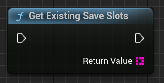

üñºÔ∏è UI Integration ‚Äì Displaying Save Slots
SaveKit Lite allows you to display available save slots in a user interface using standard Blueprint nodes.
You can:
- Show all existing save slots (by name)
- Retrieve and display metadata (save time, version)
- Load selected slots from the UI
üìÇ 1. Show Available Save Slots
Use the node:
Save Kit → Slots → GetExistingSaveSlots()

This returns an array of FString slot names. You can use this to populate a ListView, combo box, or buttons dynamically.
ü߆ 2. Get Metadata for Each Slot
Use:
Save Kit → Slots → GetSaveSlotInfos()

This returns an array of FSaveSlotInfo structs with:
| Field | Type | Description |
|---|---|---|
SlotName |
FString |
Save slot name |
SaveTime |
FDateTime |
Timestamp when the slot was saved |
SaveVersion |
int32 |
Format or version indicator |
Useful for building save/load menus with detailed information.
üì¶ Blueprint Example ‚Äì Populate ListView
Use this logic to populate a ListView with metadata:

üß± 3. Display Info in List Entry
Each ListView item can use a SaveSlotInfoObject to display save name, time, and version.
Below is a full example that:
- Displays the save slot name
- Formats and shows the save time using
FormatText - Prepends version number like
v1

Blueprint setup for OnListItemObjectSet inside a ListView entry widget.
Make sure your widget implements UserObjectListEntry, which allows binding metadata to list items.
üßæ 4. Load Metadata for Selected Slot
Use:
Save Kit → Slots → LoadSaveMetadata(SlotName)

Returns a SaveSlotInfo struct for the selected slot. Use it when you want to preview a slot before loading.
üìò 5. Additional Nodes
These nodes are used to build the save/load UI:
GetExistingSaveSlots()GetSaveSlotInfos()LoadSaveMetadata(SlotName)→ returns metadataLoadGame(SlotName)→ loads the selected save
You can use these in UMG widgets, buttons, or combo boxes.
üí° Tips
- Sort slots by
SaveTimeto show newest first - Format
SaveTimeas"dd.MM.yyyy HH:mm"for better readability - Use
AutoSaveorProfile_1as consistent slot names